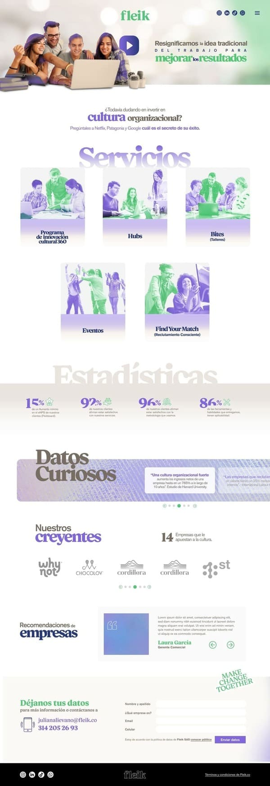
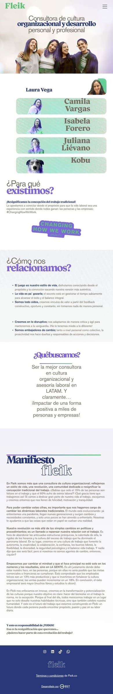
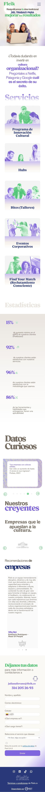
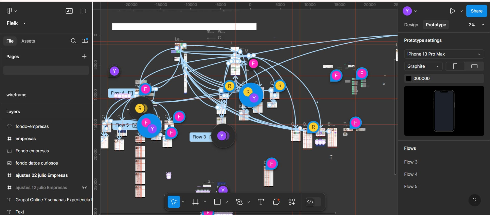

📍 Sector: Organización Cultural.
🖥️ Rol: UX/UI y Desarrollo Web.
🗓️ Duración: 3 años (dos fases de rediseño).
📌 Descripción del Proyecto
Fleik es una empresa enfocada en la organización cultural y la conexión entre audiencias. Su sitio web debía reflejar una experiencia digital dinámica, intuitiva y atractiva, alineada con su identidad y propósito.
El proyecto se llevó a cabo en dos fases principales:
1️⃣ Primera versión: Se diseñó y desarrolló una web con un enfoque vibrante y accesible para atraer usuarios.
2️⃣ Rediseño estratégico: Se optimizó la plataforma con una mejor arquitectura de información y una experiencia más enfocada en sus dos públicos clave: empresas y personas.
Herramientas Utilizadas
🛠️ WordPress | CSS | Figma




🚀 Resultado
Un sitio web renovado que logra conectar de manera efectiva con sus audiencias clave, reflejando la energía y propósito de Fleik en cada interacción.

Tu próximo proyecto merece una UX increíble.
Escríbeme